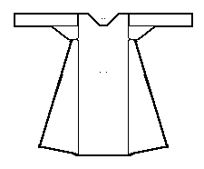

According to the typology given in Nockert, Type 5 Tunics are typified as
"Garments consisting of two straight-cut main pieces -- front and back -- joined together with a shoulder seam. Side gores inserted between the main pieces, combining with them to form sleeve openings. No gores actually inserted in the main pieces. Pocket slits occur. Long sleeve, tapering downwards, cut with an upper and lower part. Gores under the sleeves."
This is an outer garment, but can not be identified in much more detail than that. It is datable to the first half of the 14th century. There are two examples of this type of tunic; Herjolfsnes no.34, Herjolfsnes no.34, and the "Cloak of St. Bridget".
Go to Tunic Page or Proceed
Some Clothing of the Middle Ages - Tunics - Type 5, by I. Marc Carlson, Copyright 1996, 1997. This code is given for the free exchange of information, provided the Author's Name is included in all future revisions, and no money change hands-